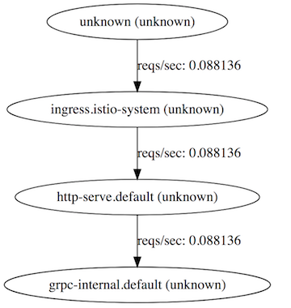
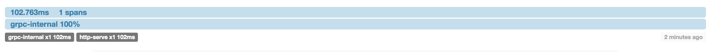
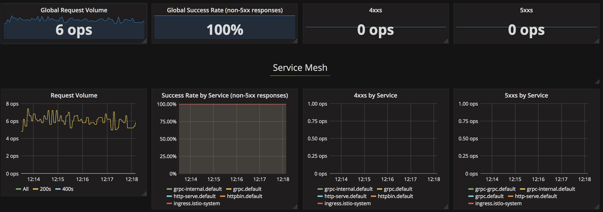
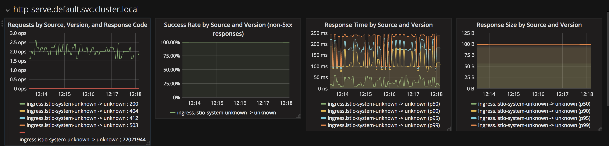
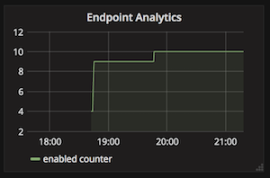

Service Mesh
Introducing Kubernetes
November 2015, I started to use containers in production, and found some crazy problems involved with this in the process, it went from service discovery to persistent storage in a few days. The environment I used were basically a CoreOS cluster with some peculiarities, like starting services remote with fleet (like kubectl). The setup were composed of a etcd/fleet cluster with 3 machines and units being deployed with an external FLEETCTL_TUNNEL variable.
Trying to create an orchestration system by hand looked like a mad task as you can read on the last posts, at least it was a lot of fun, some of the problems I faced with the setup are:
-
Downtime - My container ran on a single machine, when I stopped the unit and started again via fleetctl I had the bootstrap time and the new docker pull couting as a downtime of the service.
-
Volume persistence - This is a real pain, the volume mounted on a machine stays on there if the docker is killed, I had to do some X-fleet units hack to keep the container always on that machine.
-
Shared configurations - it were solved with etcd
-
Service discovery - A consul + registration + workarounds
-
Monitoring - A painful (cadvisor + prometheus + alertmanager) setup
But as stated on [1], "With the realization that large, expensive, proprietary supercomputers are being replaced by a clusters of commodity boxes running Linux (commoditization), at a fraction of the cost, it is not too much of a stretch to see apllication of this type of technology widespread in the engineering and traditional IT world. The availability of commodity clusters make it possible for small research organizations, It deps, and engineering groups to have their own supercomupters at a fraction of the cost previously required for the equivalten computing capability."
The last definition of a cluster from the same book is: "A closely coupled collection of computer systems that shares a common infrastructure and provides a parallel set of resources to services or applications."
For the problems above (at least) and at the same time a software that fits well on the description is Kubernetes. I could say a container orchestration abstraction layer for the masses. We are not using Maui Cluster Scheduler, ganglia or Nagios anymore, but the core concepts still remains the same.
Getting started
You can start in a few ways, if you want a single machine to play around try minikube or vagrant, if you have some resources you can use kube-aws to setup an AWS cluster with CoreOS or go with get.k8s.io. The brave ones can test the hack/local-up-cluster.sh and RTFM +1 for this option.
Problems
Monitoring
Here is where Prometheus [2] shines. Sysdig [3] is other technology that is integrating very well with kubernetes nowadays, it can be used for deep pod inspection from the replica set to end process syscall, pretty cool.
Want to see how to deploy the Prometheus stack go to the CoreOS blog [3]. Well, this is really content for another post.
Service Discovery
Kubernetes uses kube-dns, a SkyDNS based solution to create automatic registers of the existent services, so you can reach other pods on differents namespaces like - my-svc.my-namespace.svc.cluster.local, with kube-aws each pod uses it as a default nameserver.
Shared configuration
Kubernetes have two kinds of sharing data, with the old setup we passed variables to systemd units and had to encrypt the .service files with Blackbox for example before commiting to git, now we have ConfigMaps, key/values pairs of configuration data, think of .ini files shared between the pods on the cluster. We can use secrets and import both on pods specification like
- name: USE_CRON
valueFrom:
configMapKeyRef:
name: cron-data
key: use_cronVolume persistence
On AWS when you create a POD as part of the specification one can use, the volume goes to other machine if the pod is reeschuleded:
containers:
- image: nginx
name: nginx
volumeMounts:
- mountPath: /var/log/nginx
name: nginx-log
volumes:
- name: nginx-log
awsElasticBlockStore:
volumeID: vol-333333
fsType: ext4Downtime deployments
It uses the idea of deployments for replicasets and pods, in a descriptive form you just say the final state you want your pods to have. You can edit an existing template, or simple set a new container image like:
kubectl set image deployment/nginx-deployment nginx=nginx:1.9.1
deployment "nginx-deployment" image updatedFrom deployments documentation [5]:
You will see that it first created a new Pod, then deleted some old Pods and created new ones. It does not kill old Pods until a sufficient number of new Pods have come up, and does not create new Pods until a sufficient number of old Pods have been killed
Service mesh
Microservices cluster management complexity grows easily while your app evolve, questions like how to track the request between services, how to apply A/B tests, how to add metrics for services without changing any code on your application are common when deploying containers on an orchestrator. L4/L7 proxies try to solve these problems in an elegant way.
Pre - requisites for this tutorial
On the assumption that all systems bellow are installed and working A.K.A you are able to access a running Kubernetes cluster with Istio:
[1] Kubernetes
[2] Istio
[3] GRPC gateway
I really recommend doing the workshops and exercises above but if you don't have the motivation to run the stack step by step, try [4], Google Cloud Platform offers 300 USD of credits with an automatic Istio deployment interface.
The GRPC gateway
For this example we will deploy 2 different services, the first POD offers a simple GRPC server, the second POD offers a REST API gateway for the GRPC server.
Istio
From the oficial documentation: Istio provides an easy way to create a network of deployed services with load balancing, service-to-service authentication, monitoring, and more, without requiring any changes in service code. You add Istio support to services by deploying a special sidecar proxy throughout your environment that intercepts all network communication between microservices, configured and managed using Istio’s control plane functionality.
Long story short: This special sidecar proxy is injected on each pod, basically it's a modified and dynamic configured envoy (data plane), the other part of this mesh stack is the control plane composed by:
Pilot - provides service discovery for the Envoy sidecars, traffic management capabilities for intelligent routing.
Mixer - a platform-independent component responsible for enforcing access control and usage policies across the service mesh and collecting telemetry data from the Envoy proxy and other services.
Istio-Auth - provides strong service-to-service and end-user authentication using mutual TLS, with built-in identity and credential management.
The official documentation is full of good resources and information, our goal here is to be more pragmatic and have some overview and details of Istio capabilities.
Istio components
After installing Istio you can see the following PODS on istio-system ns.
kubectl get pods --namespace istio-system
NAME READY STATUS RESTARTS AGE
grafana-2369932619-9nsjq 1/1 Running 0 17h
istio-ca-191975193-tk62c 1/1 Running 0 17h
istio-ingress-596799894-40g4p 1/1 Running 0 17h
istio-initializer-2169589188-35lfx 1/1 Running 0 17h
istio-mixer-3168313471-0svbr 3/3 Running 0 17h
istio-pilot-2277488234-j270h 2/2 Running 0 17h
prometheus-168775884-t7zhd 1/1 Running 0 17h
servicegraph-2857261069-6d2vg 1/1 Running 0 17h
zipkin-3660596538-92wv9 1/1 Running 0 17hFirst, lets take a look on istio-initializer [5], running this POD enable us to automaticaly do the sidecar injection with this disable we need manually recreate the YAML files with istioctl kube-inject command, lets try to see the logs of this pod:
kubectl logs istio-initializer-2169589188-35lfx -n istio-system
http.go:100] Starting HTTP service at :8083
initializer.go:229] Starting Istio sidecar initializer...
initializer.go:230] Initializer name set to: sidecar.initializer.istio.io
initializer.go:233] Supported kinds:
initializer.go:238] /v1 ReplicationController
initializer.go:238] extensions/v1beta1 Deployment
initializer.go:238] extensions/v1beta1 DaemonSet
initializer.go:238] extensions/v1beta1 ReplicaSet
initializer.go:238] batch/v1 Job
initializer.go:238] batch/v2alpha1 CronJob
initializer.go:238] apps/v1beta1 StatefulSet
# After running
helm install --name grpc ./chart
initializer.go:174] ObjectMeta initializer info extensions/v1beta1, Kind=Deployment default/http-serve policy:"" status:"" &Initializers{Pending:[{sidecar.initializer.istio.io}],Result:nil,}
inject.go:302] Sidecar injection policy for default/http-serve: namespacePolicy:enabled useDefault:true inject:false status:"" required:true
initializer.go:174] ObjectMeta initializer info extensions/v1beta1, Kind=ReplicaSet default/http-serve-1172935448 policy:"" status:"injected-version-0.3.0" nil
initializer.go:174] ObjectMeta initializer info extensions/v1beta1, Kind=Deployment default/grpc-internal policy:"" status:"" &Initializers{Pending:[{sidecar.initializer.istio.io}],Result:nil,}
inject.go:302] Sidecar injection policy for default/grpc-internal: namespacePolicy:enabled useDefault:true inject:false status:"" required:true
initializer.go:174] ObjectMeta initializer info extensions/v1beta1, Kind=ReplicaSet default/grpc-internal-2913712020 policy:"" status:"injected-version-0.3.0" nilIf you describe the pod you can see the istio-proxy sidecar attached to the main container.
grpc:
...
istio-proxy:
Image: docker.io/istio/proxy_debug:0.3.0
...
Args:
proxy
sidecar
-v
2
--configPath
/etc/istio/proxy
--serviceCluster
http-serve
--discoveryAddress
istio-pilot.istio-system:15003
--zipkinAddress
zipkin.istio-system:9411
--statsdUdpAddress
istio-mixer.istio-system:9125
...
State: Running
...The automatic initializer
This is a very interesting use of Kubernetes Initializer, here occurs the injection of the proxy sidecar before starting the pod.
-
kubernetes adds sidecar.initializer.istio.io to the list of pending initializers in the workload.
This is achieved by the following InitializerConfiguration, that comes with Istio setup:
apiVersion: admissionregistration.k8s.io/v1alpha1
kind: InitializerConfiguration
metadata:
name: istio-sidecar
initializers:
- name: sidecar.initializer.istio.io
rules:
- apiGroups:
- "*"
apiVersions:
- "*"
resources:
- deployments
- statefulsets
- jobs
- daemonsets
----
istio-initializer controller observes a new uninitialized workload was created. It finds its configured name sidecar.initializer.istio.io as the first in the list of pending initializers.
The [NewInitializer](https://github.com/istio/istio/blob/master/pilot/platform/kube/inject/initializer.go#L94) function uses the [ListWatch](https://github.com/kubernetes/client-go/blob/master/tools/cache/listwatch.go#L52) struct, to monitor the new resources created:
// ListWatch knows how to list and watch a set of apiserver resources. It satisfies the ListerWatcher interface.
// It is a convenience function for users of NewReflector, etc.
// ListFunc and WatchFunc must not be nil
type ListWatch struct {
ListFunc ListFunc
WatchFunc WatchFunc
// DisableChunking requests no chunking for this list watcher.
DisableChunking bool
}
// Snippet of watcher including the Uninitialized assets.
WatchFunc: func(options metav1.ListOptions) (watch.Interface, error) {
options.IncludeUninitialized = true
options.Watch = true
options.FieldSelector = fields.Everything().String()
return kindClient.Get().
Namespace(v1.NamespaceAll).
Resource(kind.resource).
VersionedParams(&options, metav1.ParameterCodec).
Watch()
},-
istio-initializer checks to see if it was responsible for initializing workloads in the namespace of the workload. No further work is done and the initializer ignores the workload if the initializer is not configured for the namespace. By default the initializer is responsible for all namespaces (see configuration options).
The function [injectRequired](https://github.com/istio/istio/blob/master/pilot/platform/kube/inject/inject.go#L232) above is responsible to check the namespace.
-
istio-initializer removes itself from the list of pending initializers. Kubernetes will not finish creating workloads if the list of pending initializers is non-empty. A misconfigured initializer means a broken cluster.
The function [initialize](https://github.com/istio/istio/blob/master/pilot/platform/kube/inject/initializer.go#L202) (handler from watch) is responsible to remove itself from pending initializer.
// Remove self from the list of pending Initializers while
// preserving ordering.
if pending := obj.GetInitializers().Pending; len(pending) == 1 {
obj.SetInitializers(nil)
} else {
obj.GetInitializers().Pending = append(pending[:0], pending[1:]...)
}-
istio-initializer checks the default injection policy for the mesh and any possible per-workload overrides to determine whether the sidecar should be injected.
The function [injectRequired](https://github.com/istio/istio/blob/master/pilot/platform/kube/inject/inject.go#L270) defines the default injection policy
-
istio-initializer injects the sidecar template into the workload and submits it back to kubernetes via PATCH.
The patcher is passed to the [event handler function](https://github.com/istio/istio/blob/master/pilot/platform/kube/inject/initializer.go#L224):
return patcher(obj.GetNamespace(), obj.GetName(), patchBytes, rObj)-
kubernetes finishes creating the workload as normal and the workload includes the injected sidecar.
Service access and Ingress
You can access the service with port-forward yet:
kubectl port-forward http-serve-1172935448-zw527 8080:8080
# Accessing http://localhost:8080/v1/health
HTTP/1.1 200 OK
< Date: Mon, 01 Jan 2018 12:53:02 GMT
< Content-Length: 3
< Content-Type: text/plain; charset=utf-8
<
OKFor external access you can use the Istio Ingress Controller (with the kubernetes.io/ingress.class: istio annotation). The ingress looks like:
Name: simple-ingress
Namespace: default
Address: 35.202.0.31
Default backend: default-http-backend:80 (10.56.0.4:8080)
Rules:
Host Path Backends
---- ---- --------
*
/v1/.* http-serve:8080 (<none>)
grpc-internal:9090 (<none>)
# Access the server via your cluster external IP, note the envoy added headers:
< HTTP/1.1 200 OK
< date: Mon, 01 Jan 2018 12:52:39 GMT
< content-length: 3
< content-type: text/plain; charset=utf-8
< x-envoy-upstream-service-time: 2
< server: envoy
<
OKMetrics
Start the loop curl request and checkout the servicegraph, based on prometheus data.
while true; do curl -d '{"value": "myvalue" }' http://${INGRESS_ADDRESS}/v1/damage; done
This is a good example of your services flow, after you can track your request via opentracing and Zipkin:

Or you can check out both services usage on Grafana, the metrics are grabbed automatically.
 
Custom HTTP metric
This new metric will increment a counter each time the endpoint is called with analytic=true. To enable the counter run the following command inside the project repo, and call the endpoint with the parameter.
make set-metric
$ curl ... http://${INGRESS_ADDRESS}/v1/damage?analytic=trueThe rule will be applied after the match filter and the prometheus adapter being used.
apiVersion: "config.istio.io/v1alpha2"
kind: rule
metadata:
name: analyticprom
namespace: istio-system
spec:
match: match(request.path, "/v1/damage?analytic=*")
actions:
- handler: promhandler.prometheus
instances:
- analyticcounter.metricYou can create new Grafana visualizations in the dashboard from Prometheus metrics.

Playing around with Mixer adapter
For those curious about the mixer usage here goes a plugin to send metrics to Librato.
https://github.com/knabben/librato-adapter